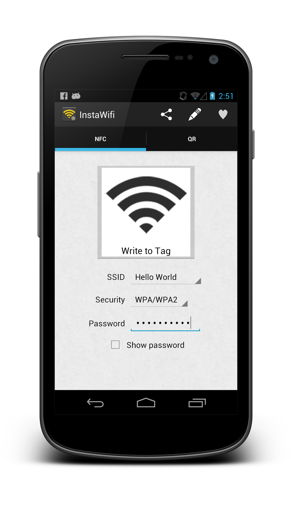
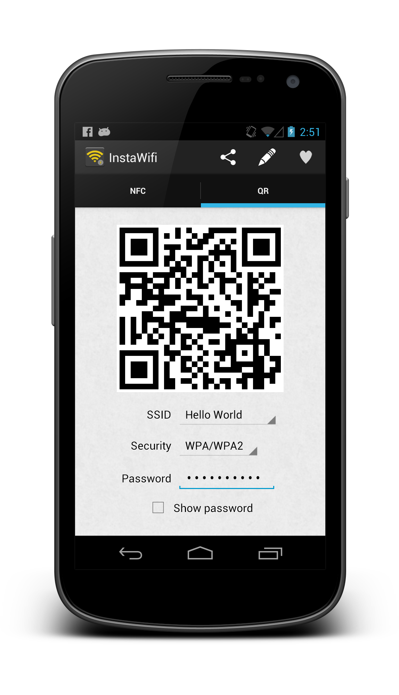
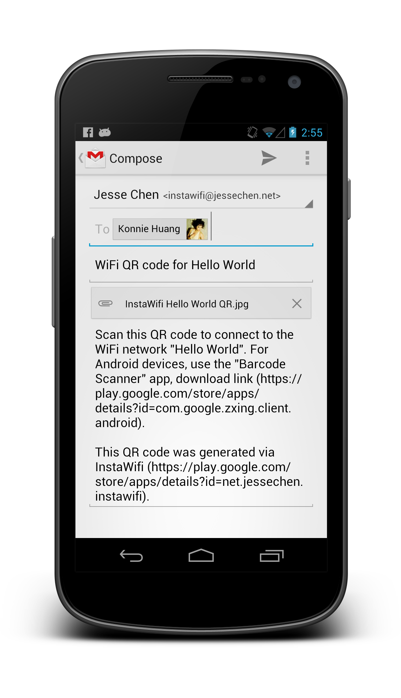
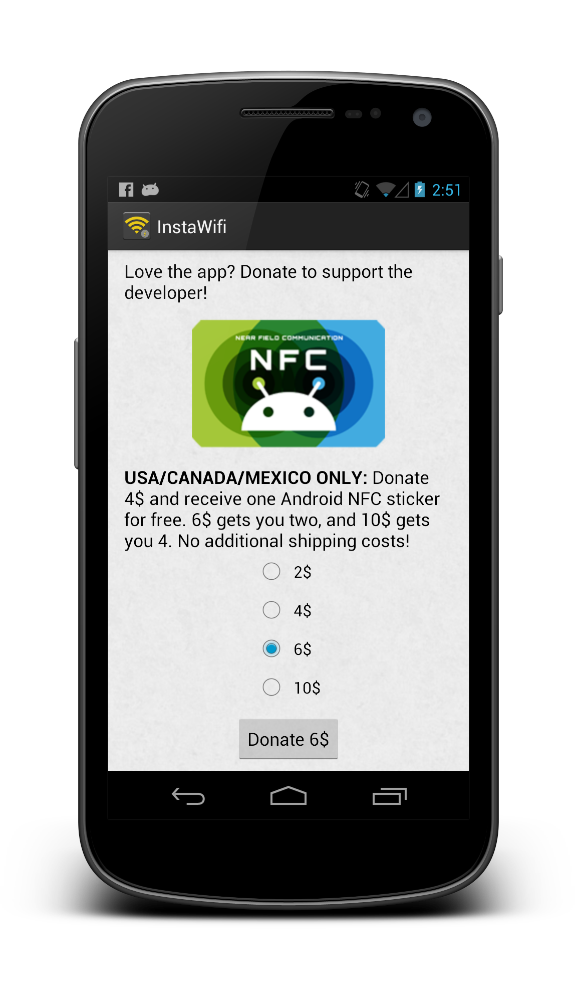
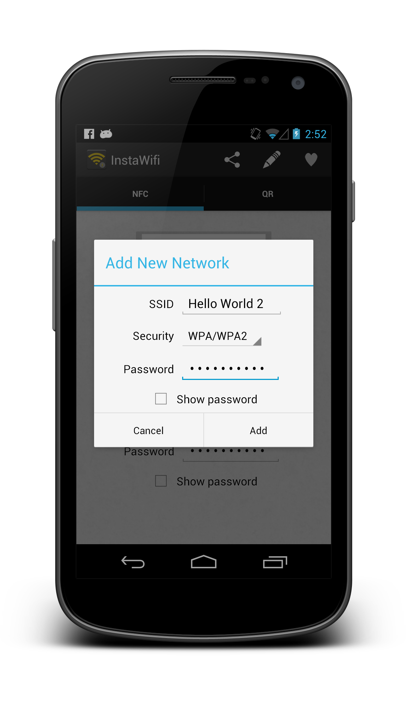

If you have root privileges, InstaWifi will prepopulate your wifi configurations. Otherwise, after filling out your configuration, tap the button to write the data onto a NFC sticker. Android Beam is also supported, so you can connect another NFC-enabled smartphone that has InstaWifi installed to your wifi network instantly.

Personalized QR codes can be printed out to be shared with guests when they visit. Any Android smartphone just needs to have the Barcode Scanner app by zxing installed, and they can scan the QR code to be connected to your wifi network instantly.

Share the QR code by tapping on the share button in the menu with your friends and family, or send it to yourself so you can print it out to have around the house.

Want to play with NFC stickers but never knew where to get them? Make a small donation to the developer and receive Android-themed NFC stickers as a token of appreciation for supporting independent developers!

For a network that you have not connected to before, tap the pencil button to add a new network to your list of known networks and to prepopulate the network configurations.